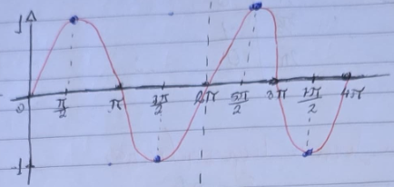
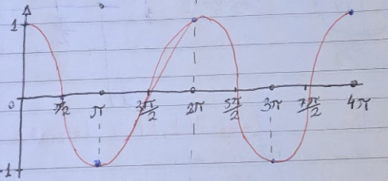
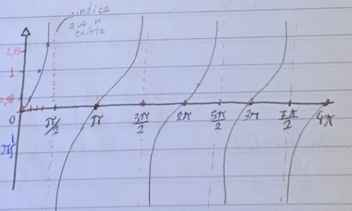
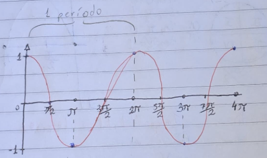

As funções trigonométricas podem ser entendidas como formas de representar gráficamente oscilações/ondas.
Função Seno
As funções Seno são representadas graficamente por linhas cuja iniciam do ponto [0,0] no gráfico na maioria
das vezes

Função Cosseno
As funções cosseno são representadas graficamente por linhas cujas iniciam no ponto [0,1] no gráfico na
maioria das vezes

Função Tangente
As funções tangente são representadas graficamente por linhas cujas iniciam no ponto [0,0] e sobrem
infinitamente até o primeiro quarto de amplitude, repetindo ela por todo a amplitude do gráfico

O que e período, amplitude e raíz?
Período
Período é medido pelo "tempo" que leva para a função voltar ao estado inicial, normalmente o período vale
2pi
Amplitude
Amplitude é a diferença entre o ponto mais alto, e o ponto mais baixo do gráfico
Raíz
Raiz é o número que quando trocado na equação no lugar da variável, anula a sentença, é o ponto onde a reta
toca no eixo x

Análise Combinatória
Princípio Fundamental da Contagem
O Princípio Fundamental da Contagem ou PFC se vê quantas vezes, quantos caminhos são possíveis,
olha as opções e multiplica-as
Exemplo: Você tem que ir de A para D passando por B, existem 2 caminhos de A para B, 2 de B para C, e 2 de C
para D. Quantos caminhos possíveis pode se pegar?
AB=2 BC=2 CD=2; 2*2*2 = 8, ou 23
Situações com Repetição dos Elementos
O Princípio Fundamental da Contagem ou PFC acredita que se vê quantas vezes, quantos caminhos são possíveis,
olha as opções e multiplica-as
Situações sem Repetição dos Elementos
Quando não há uma repetição de elementos, se diminui uma opção a cada vez, por exemplo temos 5 números de 1
a 5, e tem três digitos para utilizar, se têm 5, 4, 3 opções, isso dando 60 possibilidades.
Permutação
A permutação de elementos é quando se diponibiliza a ordem que coisas podem ficar, como por exemplo
anagramas.
Permutação sem Repetição de elementos
A permutação sem repetição de elementos ocorre quando se diponibiliza x elementos, e tais tem que ficar em
ordem diferente, podendo assim ser representado em forma de fórmula como P = n!.
Permutação com Repetição de elementos
A permutação com repetição de elementos é um pouco mais complexa, e ocorre quanto um ou mais elementos se
repetem, é utilizada a fórmula P = n!/a!*b!...
n é o número total de elementos; a,b,... são os elementos repetidos que devem ser multiplicados
Autoavaliação
Neste trimestre, eu consegui perceber que meu desempenho em matemática diminuiu, considerando que tirei 4,5 na
primeira prova. Acredito que minha falta de estudos, e também a falta de atenção nas aulas resultou nesta nota,
não sendo pela falta de explicação do conteúdo, ou pela falta de exercícios nos PDFs.